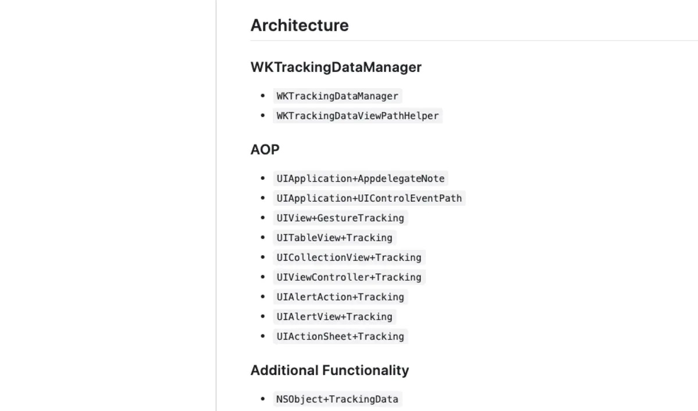
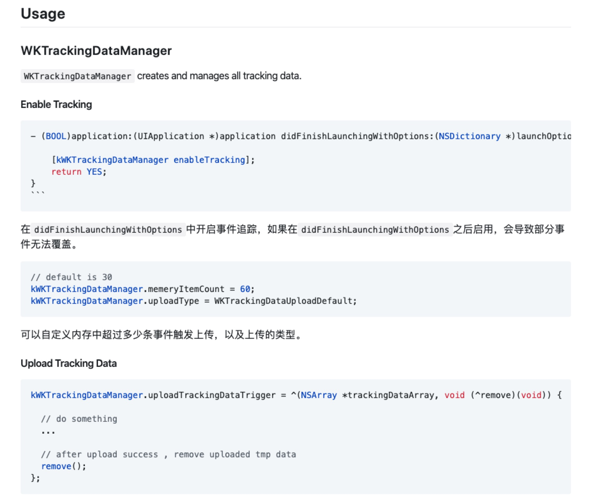
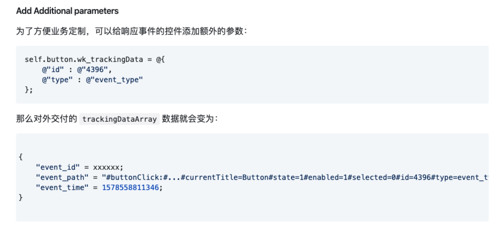
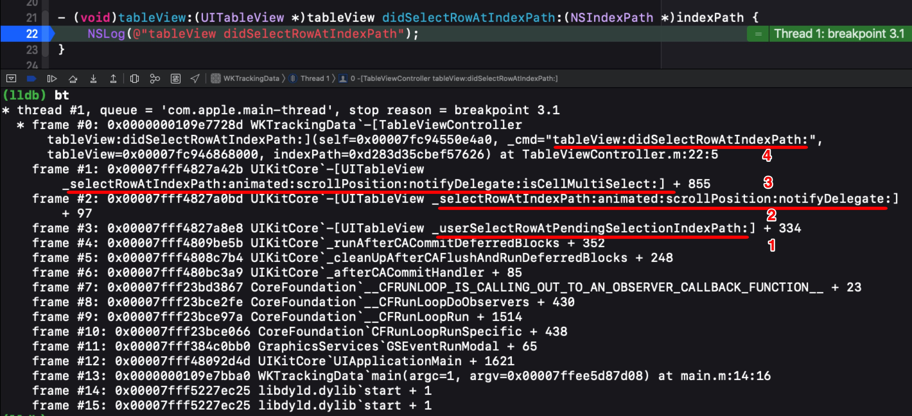
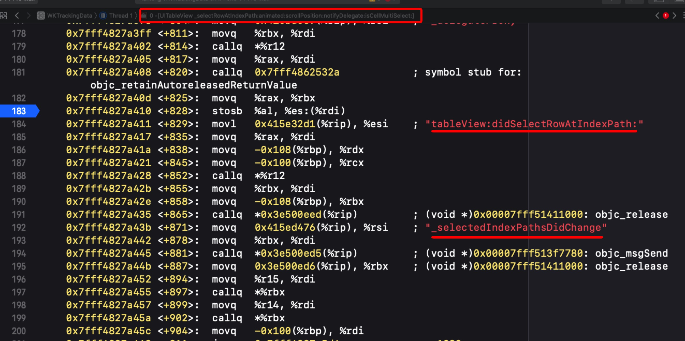

客户端埋点大概分为三类：
- 代码埋点
- 可视化埋点
- 无埋点
这篇文章主要介绍了 无埋点 的想法和实践过程。
1、代码埋点
代码埋点，即在需要埋点的节点调用接口直接上传埋点数据，第三方数据统计服务商也大都提供了代码埋点的 api，非常方便。
但是带来一个问题，埋点代码散落在业务的各个地方，和业务耦合严重，尤其是在页面改版，业务变动的过程中，旧的埋点不知道怎么处理，新的埋点不知道需不需要，当埋点数量上来之后，对散落的埋点代码的维护是个灾难。 当然你可以通过宏、工厂类去简化埋点代码，但并不能改变什么
1 | - (void)viewDidDisappear:(BOOL)animated { |
2、可视化埋点
可视化埋点，即通过可视化工具配置采集节点，在前端自动解析配置并上报埋点数据，从而实现所谓的“无痕埋点”， 代表方案是已经开源的 Mixpanel。
3、无埋点
无埋点或者叫做全埋点，它并不是真正的不需要埋点，而是采集全部事件上报。剩下交给服务器做过滤，筛选出有用的数据。
无埋点进一步优化，可以通过服务器下发配置文件，直接由前端进行事件过滤。
为了 kpi，基于无埋点的思想，造了一个轮子 WKTrackingData。
这里把 WKTrackingData 实现中碰到的一些问题与想法做一下记录。
实现思想很简单，所有代码如下：

其中 WKTrackingDataManager 负责所有的数据管理，事件追踪配置。

WKTrackingDataViewPathHelper 负责 event_path 生成。
AOP 模块负责所有事件的追踪。
详细的用法可以点击 github 查看。
如何唯一标示某个事件？
这里涉及两个问题，一是事件怎么表示？二是如何确保事件的唯一性？
事件的表示
对于事件的表示，使用了 event_path 实现。核心思想是对于触发了某个事件的 responder ，顺着其响应者链条，构建出其响应者链条的 path。
生成的响应者 path 如下： 1
"event_path" = "#buttonClick:#UIButton#UIButton[0]#UIView[0]#ViewController#...#UIApplication#AppDelegate
唯一标示某个事件
这里有个问题是，某些业务场景下，同一个 button 或者其他控件，会因为其某些属性的改变，在业务上表示的是多种不同的事件。
如，首页一个 button 在未登录时显示 点击登录，登录未实名时显示 去实名等等。
那么对于这同一个 button 来说，它的视图树并未发生改变，生成的响应者 path 就是相同的。
类似的业务场景还有 UISwitch 的开关，UISegmentedControl 的 indexSelect，UIStepper ，以及 UITableView 和 UICollectionView 的 cell 点击。
针对于这种情况，WKTrackingData 在生成 event_path 时，有选择的将控件自身的不同属性也拼接上，生成的 event_path 就变成了这样：
1 | "event_path" = "#buttonClick:#UIButton#UIButton[0]#UIView[0]#ViewController#...#UIApplication#AppDelegate#currentTitle=Button#state=1#enabled=1#selected=0"; |
业务扩展
继续考虑另外一种业务场景，首页有一个 banner 轮播图，
banner 每一个广告位的图片和跳转 url 都是由服务器下发的，且位置可配置。
这时 banner 的 每一个 index，对应什么页面都是不固定的，0 位所对应的事件，由 event_path 是无法确定的。
这时就需要拼接上具体的业务参数，才能够唯一标示某个事件，如 url。
WKTrackingData 也提供了业务方的参数扩展，允许业务方拼接上自定义参数：

对于不希望进行事件追踪的控件，可以通过 wk_ignoreTracking 进行忽略：
1 | self.slider.wk_ignoreTracking = YES; |
其他问题
在对于不同事件的追踪上，WKTrackingData 基于面向切面的思想，使用 runtime 直接做方法交换。
但是对于 UIAlertView、UIActionSheet、UITableView、UICollectionView 的统计，需要交换其 delegate 的方法。
如果其
delegate class已经实现了相应的方法，那么直接交换即可。如果其
delegate class未实现相应的方法，这时仍然想要追踪到这些事件，那么就需要手动添加一下对应的delegate method的实现。
1 | - (void)wk_swizzleInstanceSelector:(SEL)origSel_ fromClass:(Class)fromClass replaceSelector:(SEL)replaceSel_ originNotImp:(SEL)notImpSel_ { |
但在实践过程中发现，UITableView、UICollectionView 的 delegate 对象，在未实现相应方法时，手动给 tableView:didSelectRowAtIndexPath: 添加了 implementation，仍然不会触发。
我们先来看一下，正常 tableView:didSelectRowAtIndexPath: 调用栈：

这里面，UITableView 前后会调用这四个方法，进行 cell 点击的响应。
- 1、[UITableView _userSelectRowAtPendingSelectionIndexPath:]
- 2、[UITableView _selectRowAtIndexPath:animated:scrollPosition:notifyDelegate:]
- 3、[UITableView _selectRowAtIndexPath:animated:scrollPosition:notifyDelegate:isCellMultiSelect:]
- 4、[TableViewController tableView:didSelectRowAtIndexPath:]
根据调用顺序可以发现 UITableView 在真正调用 delegate class 的 tableView:didSelectRowAtIndexPath: 前，会先触发自己的 _selectRowAtIndexPath:animated:scrollPosition:notifyDelegate:isCellMultiSelect: 方法。
直接给 _selectRowAtIndexPath:animated:scrollPosition:notifyDelegate:isCellMultiSelect: 打一个断点进入汇编查看，发现：

如果 delegate class 如果有实现 tableView:didSelectRowAtIndexPath: ，则一切正常，会完成 tableView:didSelectRowAtIndexPath: 的调用。
但如果 delegate class 未实现 tableView:didSelectRowAtIndexPath: ，即便手动给 tableView:didSelectRowAtIndexPath: 添加 implementation，也不会尝试响应 tableView:didSelectRowAtIndexPath: 了。
跟随汇编调用发现，会直接 jump 到另外一个指令。
WKTrackingData 这里换了种做法，直接对 [UITableView _userSelectRowAtPendingSelectionIndexPath:] 进行了交换（UICollectionView 类似）。 实现了 UITableView、UICollectionView 的 delegate 对象，在未实现相应方法时对 cell 事件的追踪。
4、小结
多个event_path对应同一个事件
考虑另外一种情况，线上存在多个版本，不同版本的页面都有一些细微的差别，那么对于同一个事件来说，它就可能存在多个 event_path。
在实践过程中，这一块的映射，就需要服务器同学的配合了，可以让服务器做成后台可配置的。
事件统计优化
在 业务扩展 中提到了如何添加业务参数，WKTrackingData 使用了分类实现。
在实践过程中发现，全埋点的方案，造成了大量流量的浪费，有好多事件不需要啊[(ŏ_ŏ)]。
进一步优化，可以由服务器下发配置文件，里面直接包含了，希望客户端上报的所有事件，只有和配置文件中符合的 event_path 才进行上报。
这一步的业务参数获取，也可以不采用 WKTrackingData 的实现，直接使用 kvc 获取。
形如： 1
key_path = "viewController.banner.url"
看到这里就点开 WKTrackingData 给个star吧，有问题可以在guthub上提issue，或者下方评论～